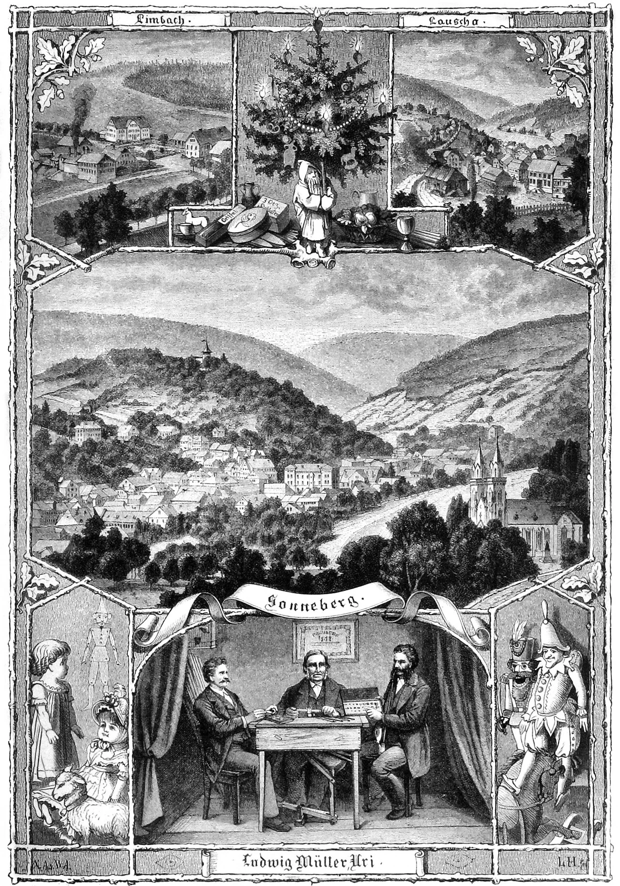
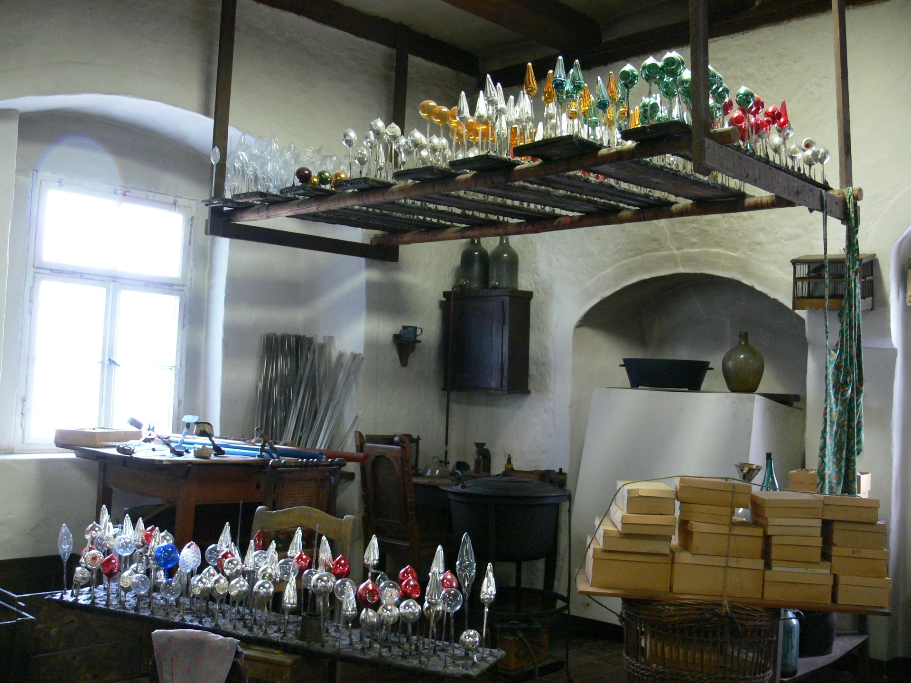
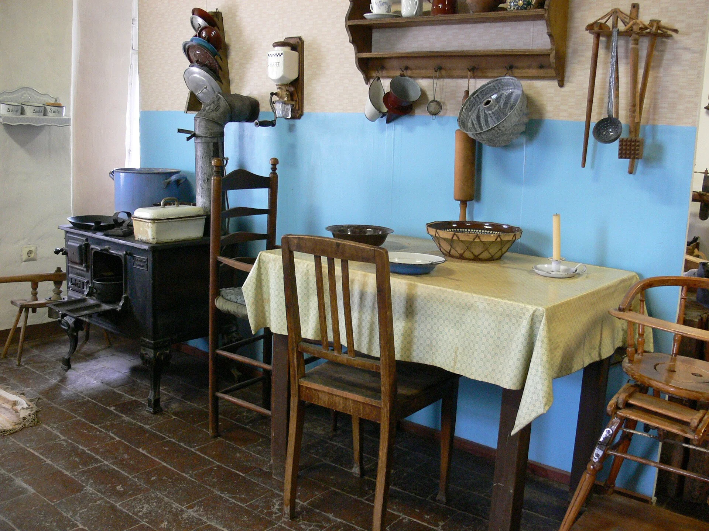

아직 펼치지 않은 카드
아직 펼치지 않은 카드
손으로 빚은 성탄 장식 · 2라우샤의 유리 장식투명한 유리는 어떻게 거울처럼 반짝이게 될까요?투명한 유리가 은색으로 반짝여. 어떻게 된 걸까?
1850년 무렵부터 1950년대까지독일 튀링겐 · 라우샤에서 존네베르크까지
라우샤의 유리 장식
독일 튀링겐 숲의 유리 마을 라우샤. 온 가족이 만든 유리 장식을 아내들이 바구니에 지고 15킬로미터 골짜기 길을 걸어 상인에게 가져갔어요. 그 길을 한 구간씩 따라 걸어 보세요.
유리 마을 엄마들은 커다란 바구니에 유리 장식을 담아 등에 지고 먼 길을 걸었대. 우리도 같이 걸어 볼까?
검수 전 시안이에요(기준서 1판). 아내들의 길은 튀링겐 관광청과 코부르크 렌슈타이크 관광 안내를, 가족의 일은 라우샤 유리 예술 박물관을 다룬 기사와 1907년 글을 따랐어요. 길잡이 지도는 이 안내서가 그렸어요. 상상은 ‘눈 감고 상상해 보기’에만 썼어요.
시안 확인용카드 단계 미리 보기
1
숲속 골짜기의 유리 마을
독일 튀링겐 숲의 좁은 골짜기에 라우샤가 있어요. 이 고장은 16세기 끝 무렵부터 유리를 불어 왔어요.
19세기 중반부터 라우샤와 이웃 마을에서 성탄 나무에 거는 유리 장식을 만들었어요. 유리 부는 일과 상관없는 집이 거의 없었대요.


왼쪽은 1921년 라우샤 마을이 찍은 비상 지폐예요. 물자가 모자라던 때 마을이 따로 찍은 돈이에요. 앞면에는 유리공이 불꽃 앞에서 유리 공을 불고, 뒷면에는 ‘라우샤의 성탄 장식은 온 세상이 좋아한다’고 적었어요.
오른쪽은 1883년 독일 잡지 그림이에요. 오른쪽 위 작은 그림이 라우샤, 가운데 큰 그림이 장난감 상인들의 도시 존네베르크예요. 이 두 곳 사이를 걸어 볼 거예요.
숲속 골짜기에 유리 마을이 있어. 거의 모든 집이 유리를 불었대!
물어보기지폐 속 아저씨는 무엇을 하고 있을까?
2
온 가족이 일하던 방
라우샤 유리공 가족은 30~40제곱미터 방에서 할머니부터 여러 손주까지 함께 살며 일했어요.
남자들이 유리를 불면, 나머지 식구들이 안쪽에 은을 입히고, 색을 칠하고, 꼭지 모자를 씌우고, 상자에 쌌어요.


“이른 아침부터 깊은 밤까지”
마르테 레나테 피셔, 「라우샤의 유리공들에게서」, 『그렌츠보텐』 1907년 · 유리공이 작업대에 앉아 있는 때를 적은 말 · 독일어를 이 안내서가 옮김
1907년의 이 글은 유리공이 셔츠 바람으로 발로 풀무를 밟으며 가스 불꽃을 바라본다고 적었어요. 유채 기름과 파라핀, 석유를 태우던 작업 등잔은 가스 불꽃으로 바뀌었어요.
독일 성탄 박물관은 1867년부터 더 뜨겁고 조절하기 쉬운 불꽃 덕분에 얇고 가벼운 공을 불 수 있었다고 소개해요.
사진은 에르푸르트의 튀링겐 민속 박물관에 옮겨 꾸민 1930년 무렵 유리공 가족의 방이에요. 오른쪽 아래, 상자 밑에 버들 바구니가 보여요.
작은 방 하나에서 할머니부터 아기까지 같이 살면서 유리 장식을 만들었대.
물어보기방 안에 반짝이는 장식이 몇 개나 보여?
3
유리공 아내들의 길
다 만든 장식은 존네베르크의 상인에게 가져갔어요. 존네베르크는 장난감을 사고팔던 도시예요. 상인들은 그곳에 사무실과 창고를 두고, 장식을 라이프치히 박람회로 가져가 팔았어요.
그 길을 걸은 사람은 유리공의 아내들이었어요. 커다란 버들 바구니를 등에 지고, 라우샤에서 슈타이나흐를 지나 존네베르크까지 15킬로미터를 걸었어요.
‘다음 곳으로’를 눌러 바구니를 진 아내의 길을 따라가 보세요.
 라우샤좁은 골짜기슈타이나흐‘횔’ 오르막존네베르크
라우샤좁은 골짜기슈타이나흐‘횔’ 오르막존네베르크라우샤에서 존네베르크까지 · 이 안내서가 그린 길잡이 지도 · 튀링겐 관광청이 전하는 아내들의 길을 바탕으로
바구니가 깨지지 않고 존네베르크에 닿았어요. 온 가족의 한 주 일이 상인에게 건너갔어요.
“짐이 깨지면, 온 가족의 한 주 일이 사라졌어요.”
튀링겐 관광청, 「유리공 아내의 전설」 · 독일어를 이 안내서가 옮김
새 무늬 견본은 봄과 여름에, 주문받은 장식은 가을에 날랐어요. 겨울이 일찍 오는 라우샤에서, 가을이면 아내들은 거의 주마다 이 길에 나섰어요.
존네베르크에서 적은 삯을 받았어요. 돌아가기 전에 무엇부터 살까요?
엄마들이 무거운 바구니를 지고 산길을 걸었대. 바구니에는 깨지기 쉬운 유리 장식이 가득!
물어보기가장 힘든 오르막의 이름이 뭐였을까?
4
1950년대까지 걸은 길
뒤에는 여러 유리공 가족의 바구니를 맡아 나르는 배달부 여성들도 있었어요. 라우샤 역에서 바구니를 모아 존네베르크까지 지켰대요.
어떤 아내들은 1950년대까지도 존네베르크까지 걸어 다녔어요. 유리공들이 성탄 장식 공장에서 안정된 일자리를 얻은 1950년대 초에야 이 길은 쓰이지 않게 되었어요.

오늘 이 길은 ‘유리공의 길’이라는 이름의 걷는 길이 되었어요.
사진은 2002년 라우샤의 한 유리공 가게 진열창이에요. 눈 덮인 마을을 손으로 그린 유리 공이 걸려 있어요.
이제는 그 길을 누구나 걸을 수 있는 산책길이 되었대.
물어보기유리 공에 그림을 그린다면, 너는 무엇을 그릴래?
눈 감고 상상해 보기
가을 새벽, 골짜기에 안개가 껴요. 등에 진 바구니 속에서 유리 장식들이 아주 작게 짤랑거려요. 전나무 숲 냄새를 맡으며 오르막을 오르면 숨이 차요. 저 아래로 존네베르크 지붕들이 보여요.
눈을 감아 봐. 안개 낀 숲길이야. 등에 멘 바구니에서 유리가 짤랑짤랑. 영차, 영차, 오르막이야!
나의 자리
내가 받은 빛을, 나는 누구에게 비추어 주고 있나요?
트리에 단다면 어떤 모양 유리 장식을 만들고 싶어?
마음에 닿는 한 줄을 고르거나 직접 써 보세요. 한 줄을 남기면 이 자리의 도장이 찍혀요. 이 기기에만 저장돼요.
더 깊이
궁금한 칸만 펼쳐 읽어도 괜찮아요.
알고 보면
꼭지 모자 식구들이 하던 일 가운데 ‘모자 씌우기’가 있었어요. 유리 장식의 목에 매달 고리가 달린 작은 꼭지를 씌우는 일이에요.
견본과 주문 아내들은 봄과 여름에는 새 무늬 견본을, 가을에는 주문받은 장식을 날랐어요. 20세기 전까지 일은 철 따라 달라지는 주문을 따라갔대요.
상인들의 도시 존네베르크의 상인들은 라우샤의 장식을 라이프치히 박람회로 가져갔어요. 거기서부터 알록달록한 유리 공이 널리 퍼졌어요.
삯이 적어서 한 관광 안내는 라우샤–존네베르크 철도가 생긴 뒤에도 장식을 만드는 집들이 돈이 없어 기차를 타지 못했다고 해요.
기록마다 다른 점
누가 날랐나 튀링겐 관광청은 유리공의 아내들이 1950년대까지 존네베르크로 걸어갔다고 해요. 1907년 『그렌츠보텐』의 글은 예전에는 짐을 등에 진 남자들이 유리를 날랐고, 이제는 우편과 기차가 맡는다고 적었어요.
길의 길이 튀링겐 관광청은 15킬로미터, 코부르크 렌슈타이크 관광 안내는 16.5킬로미터라고 해요.
기차역 철도가 있어도 걸었다는 안내가 있는 한편, 튀링겐 관광청은 배달부 여성들이 라우샤 역에서 바구니를 모아 날랐다고 해요. 때와 집마다 달랐을 거예요.
직접 가 보기
확인한 날 · 2026년 11월 18일 · 바뀌기 쉬운 정보라 정기적으로 다시 확인해요
라우샤에서 슈타이나흐를 지나 존네베르크까지, 옛 길이 ‘유리공의 길’이라는 걷는 길로 남아 있어요. 높낮이 차가 400미터쯤이니 걷기 편한 신발을 챙기세요.
라우샤의 유리 예술 박물관은 1597년 첫 유리 공방부터 장인들의 가난한 살림까지 보여 줘요. 여는 때는 누리집에서 확인해 주세요.
- 튀링겐 관광청: 유리공 아내의 전설 독일어
- 라우샤 유리 예술 박물관 독일어
아내들의 길 끝까지 금박
라우샤에서 존네베르크까지 다섯 곳을 모두 따라가면 카드에 금박이 입혀져요.
라우샤에서 존네베르크까지 다섯 곳을 따라가기
돌아가는 길의 장보기 채색
둘 가운데 하나만 해도 카드가 채색돼요.
유리공의 아내처럼, 받은 삯으로 무엇부터 살지 고르기
아이와 함께 ‘영화처럼 보기’를 끝까지 보기
근거 보기 (10)
- 튀링겐 관광청: 「유리공 아내의 전설」(독일어·영어) — 버들 바구니, 20~30kg, 라우샤–슈타이나흐–존네베르크 15km, ‘횔’ 오르막, 400m 높낮이, 견본과 가을 주문, 거의 주마다, 깨지면 한 주 일, 적은 삯으로 칠감·장식 재료, 배달부 여성과 라우샤 역, 1950년대까지
- 코부르크 렌슈타이크 관광(ADAC 지도 안내): 라우샤 유리공의 길 — 16.5km, 19세기 중반 가장 짧은 길, 흙길, 바구니와 나무 지게, 철도가 생긴 뒤에도 걸음, 1950년대 초까지
- 독일 수공업 신문(2013): 라우샤 유리 예술 박물관 — 30~40㎡ 방에서 할머니부터 손주까지, 남자는 불고 식구들은 은 입히기·칠하기·모자 씌우기·싸기, 1597년 첫 유리 공방
- 마르테 레나테 피셔, 「라우샤의 유리공들에게서」, 『그렌츠보텐』 1907년 3권 — 이른 아침부터 깊은 밤까지, 풀무와 가스 불꽃, 등잔 연료, 짐을 진 남자들과 우편·기차
- 독일 성탄 박물관: 유리 장식 — 1867년부터 뜨거운 불꽃으로 얇은 공
- 독일 역사 박물관(LeMO): 성탄 나무 유리 공(1870년대) — 1850년 무렵부터 라우샤 일대, 16세기 끝부터 유리 불기
- 튀링겐 관광청: 「유리 장식의 요람」 — 유리 일과 상관없는 집이 거의 없음
- 튀링겐 관광청: 성탄의 유리 공 — 존네베르크 상인들이 라이프치히 박람회로
- taz(2025): 유리공의 도시 — 슈타이나흐에서 나는 점판암
- 위키미디어 공용: 라우샤 비상 지폐(1921), 『가르텐라우베』 1883년 그림, 에르푸르트 박물관의 유리공 방 사진 설명
그림·사진·소리 출처
- 그림: 라우샤 마을 비상 지폐(1921) · 퍼블릭 도메인 · 위키미디어 공용
- 그림: 루이스 후첸로이터 · 퍼블릭 도메인 · 위키미디어 공용
- 사진: Andreas Praefcke · 퍼블릭 도메인 · 위키미디어 공용
- 사진: Andreas Praefcke · 퍼블릭 도메인 · 위키미디어 공용
- 이 안내서가 그린 길잡이 지도 · 튀링겐 관광청이 전하는 아내들의 길을 바탕으로
- 사진: Jörg Blobelt · CC BY-SA 4.0 · 위키미디어 공용 · 일부 잘라 씀
- 사진: Krebs Glas Lauscha · CC BY 3.0 · 위키미디어 공용 · 일부 잘라 씀
‘처음 만나는 기독교 문화’의 깊은 카드예요. 실제 인물의 사진은 쓰지 않았어요. 카드 단계와 남긴 글은 이 기기에만 저장돼요.